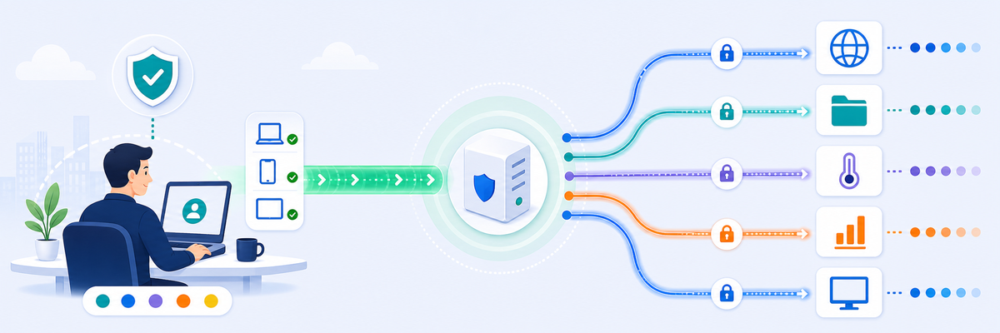

Lab 5: Configure ZPA Policy
LAB 5
Scenario: Provision the ZPA App Connector on the Safemarch corporate network, define Application Segments for all internal resources, and create access policies with department-level controls and idle timeout rules so only the right users reach the right apps.

THINK FIRST · ZPA POLICY DESIGN
ZPA works on a deny-by-default model — if there is no matching access policy rule, the user cannot reach the app. Every application you want accessible must have an explicit rule.
- Why does Safemarch use a Client Forwarding Policy (bypass rule) for apps like erp.safemarch.com and crm.safemarch.com, and what does this mean for their security posture?
- Why is device posture required for SIEM server SSH access specifically, but not for Intranet or File Share access?
- What happens if the idle timeout policy for HVAC (15 minutes) is not configured, and why does it matter specifically for that application?
Configuration Requirements
Work through all seven requirements. Check each one off as you complete it.
App Connector · ZPA Admin Portal → Infrastructure → App Connectors
Application Segments · ZPA Admin Portal → Application Management → Application Segments
Access & Timeout Policy · ZPA Admin Portal → Policy → Access Policy
Testing Requirements
- Log in to the Corp: Client PC VM and attempt to reach each application segment by its internal address.
- Confirm ZPA access logs show the correct policy rule matching each connection.
- Attempt access from a department that should be denied — confirm it is blocked.
Where to get help
My Questions
My Notes
MENTAL NOTE
ZPA setup has three layers: (1) App Connector — the on-prem VM that brokers connections from the Zscaler cloud to internal apps, (2) Application Segments — define which internal resources are reachable and through which connector, (3) Access Policy — controls which users/departments can reach which segments, with idle timeout enforcing re-authentication on dormant sessions.